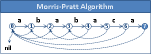
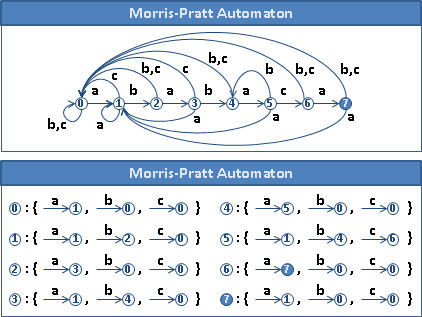

© 2010 tkcn. All rights reserved.
想法
1.
T: aabzabzabcz
P: abzabc
2.
窮舉法，從左往右逐步挪動P。
aabzabzabcz aabzabzabcz aabzabzabcz
|||||| |||||| |||||| ......
abzabc abzabc abzabc
(X) (X) (X)
2.
仔細看窮舉法，是從左往右一一比對字元，一旦發現字元不同，就馬上往右挪動P。
V V V V
aabzabzabcz aabzabzabcz aabzabzabcz aabzabzabcz
| |X | ||
abzabc abzabc abzabc abzabc
V V V V
aabzabzabcz aabzabzabcz aabzabzabcz aabzabzabcz
||| |||| ||||| |||||X
abzabc abzabc abzabc abzabc
V V V V
aabzabzabcz aabzabzabcz aabzabzabcz aabzabzabcz
X X | || ......
abzabc abzabc abzabc abzabc
3.
往右挪動P之前，當下比對成功的字串片段，abzab，其實可以好好利用！
V
aabzabzabcz -abzab-----
|||||X |||||
abzabc abzab-
4.
觀察窮舉法的步驟順序，繼續往右挪動P，挪動一個位置、挪動兩個位置、……。
-abzab----- -abzab----- -abzab-----
|||| ||| ||
abzab- abzab- abzab-
-abzab----- -abzab-----
|
abzab- abzab-
5.
換個角度觀察上述行為。
挪動一個位置：看看abzab的後四個字元，是不是前四個字元。
挪動兩個位置：看看abzab的後三個字元，是不是前三個字元。
⋮ ⋮ ⋮
6.
如果我們預先知道abzab的「次長的相同前綴後綴」是ab，
就可以一口氣大幅挪動P，略過許多步驟：
V V
aabzabzabcz aabzabzabcz
|||||X ---> ||
abzabc abzabc
7.
從「V」處繼續向右一一比對字元。
每當比對失敗、遇到相異字元，
就故技重施，從當前比對成功的字串片段，取其「次長的相同前綴後綴」，大幅挪動P。
prefix-suffix【尚無正式名稱】
前綴等於後綴，稱作「相同前綴後綴」。一個字串通常有許多個「相同前綴後綴」。
prefix-suffix
abc --------------> {Ø, abc}
abcaa --------------> {Ø, a, abcaa}
abcabc --------------> {Ø, abc, abcabc}
ababa --------------> {Ø, a, aba, ababa}
aaaaa --------------> {Ø, a, aa, aaa, aaaa, aaaaa}
abaabaa --------------> {Ø, a, abaa, abaabaa}
abzab --------------> {Ø, ab, abzab}
longest proper prefix-suffix（border）
一個字串的「最長的相同前綴後綴」就是原字串，「最短的相同前綴後綴」就是空字串，「次長的相同前綴後綴」就是第二長的相同前綴後綴。
border
abc -------> Ø
abcaa -------> a
abcabc -------> abc
ababa -------> aba
aaaaa -------> aaaa
abaabaa -------> abaa
abzab -------> ab
failure function（prefix function）（border function）
窮舉法的過程當中，當前比對成功的字串片段，是P的前綴。因為我們無法預測是P的哪幾個前綴，所以我們可以預先計算P的每一個前綴的「次長的相同前綴後綴」，以備不時之需！
failure function是一個字串函數：輸入字串的其中一個前綴，則輸出該前綴的「次長的相同前綴後綴」。
012345
abzabc
prefix | border |failure function| implementation
-------|--------|----------------|----------------
Ø | Ø | f(Ø) = Ø |
a | Ø | f(a) = Ø | failure[0] = -1
ab | Ø | f(ab) = Ø | failure[1] = -1
abz | Ø | f(abz) = Ø | failure[2] = -1
abza | a | f(abza) = a | failure[3] = 0
abzab | ab | f(abzab) = ab | failure[4] = 1
abzabc | Ø | f(abzabc) = Ø | failure[5] = -1
計算failure function，一般是利用Dynamic Programming。分割問題的方式，是P[0...i]拿掉尾端字元P[i]，利用已知的「次長的相同前綴後綴」，得到P[0...i]的「次長的相同前綴後綴」。
【待補圖片】
稱作failure function，是因為比對失敗時，就會使用它。稱作prefix function，是因為此函數的定義域是prefix。稱作border function，是因為此函數的值域是border。
字串匹配
字串匹配的過程，跟failure function的計算過程十分相像。
一、預先計算P的每種前綴的「次長的相同前綴後綴」。
二、從左往右，依序比對字元。
回、當比對成功、遇到相同字元：
繼續比對下個字元。
回、當比對失敗、遇到相異字元：
就從比對成功的字串片段，取其「次長的相同前綴後綴」來大幅挪動P。
回、當全部比對成功、匹配到P：
就從比對成功的P，取其「次長的相同前綴後綴」來大幅挪動P。
也來個流程圖的版本。
甲、移動「V」。
（下一步為乙。）
乙、比對兩字元。
（若相同，下一步為甲或戊。若不同，下一步為丙。）
丙、從目前比對成功的字串片段，找到「次長的相同前綴後綴」。
（下一步為丁。）
丁、向右挪動P，左端僅露出一截「次長的相同前綴後綴」。
（下一步是乙。）
戊、整個P匹配成功。
（下幾步是丙、丁、甲。）
（當字串結尾附有'\0'，則下一步是甲。）
時間複雜度：multipop stack的均攤分析
在講解時間複雜度之前，先討論一個基礎問題。
有一個stack，一開始是空的。它有三種操作。
1. push(x) - worst time O(1)
2. pop() - worst time O(1)
3. multipop(k) - 連續pop出k個元素，如果stack是空的就馬上停止。
worst time O(min(k, s))，當stack恰有s個元素的時候。
請問這個stack進行N次操作的時間複雜度為多少？
我們不知道每次的操作是哪一種。可能是三種其中一種。
甲、普通的分析：
乍看之下，花費最多時間的就是multipop，於是我們就以multipop的觀點來計算時間複雜度。
一次multipop的時間複雜度是O(min(n, k))，n是stack當下的元素個數，k是欲pop的元素個數；由於n和k最大可到N，所以寫成O(N)。
multipop最多有N次，N次的multipop是O(N^2)，因此時間複雜度就是O(N^2)。
乙、均攤分析：
N次操作，stack從頭到尾最多只能放入N個元素，也就是N次push。
也就是說，stack從頭到尾最多只能彈出N個元素。無論是pop、multipop，最多只能彈出N個元素。
由放入的元素、彈出的元素的總數量，來計算時間複雜度；這兩個數量相加最多就是N，因此時間複雜度就是O(N)。
時間複雜度
接著回到Morris-Pratt Algorithm。分為兩部分討論。
甲、進行字串匹配的過程：
以字元兩兩比對的總次數，作為時間複雜度。
當下比對成功的字串片段S，想成是stack的元素。一開始S長度是零；如果比對到相同字元，S就會增加一字元，想成是push；如果比對到不同字元，大幅挪動P之後，S就只剩下「次長的相同前綴後綴」，一瞬間變短很多，想成是multipop。（實際上，一瞬間變短很多只需要O(1)，時間複雜度遠比multipop來的小。）
最多有T個字元放入S、彈出S，所以字元兩兩比對的總次數不超過2*T次。
換個方式說。對於T的某一個字元來說，與其他字元進行比對的次數，小於等於「當下比對成功的字串片段」的長度。「當下比對成功的字串片段」是動態改變的，如同stack一樣增減，所以字元兩兩比對的總次數不超過2*T次。
乙、計算P的failure function的過程：
原理與甲相同，字元兩兩比對的總次數不超過2*P次。
總時間複雜度為O(T + P)。
UVa 455 10298 11475
Morris-Pratt Automaton
此演算法可以化作自動機，轉化的時間複雜度為O(PA)，A為字元種類數目。
化作自動機之後，字串匹配的過程就變得更簡單了，甚至可以設計成電子迴路。


轉化的原理，是針對每個狀態，都找出經由failure function能到達的狀態們，然後建立轉移邊，連到那些狀態們的下一個狀態。
【待補程式碼】
ICPC 4842